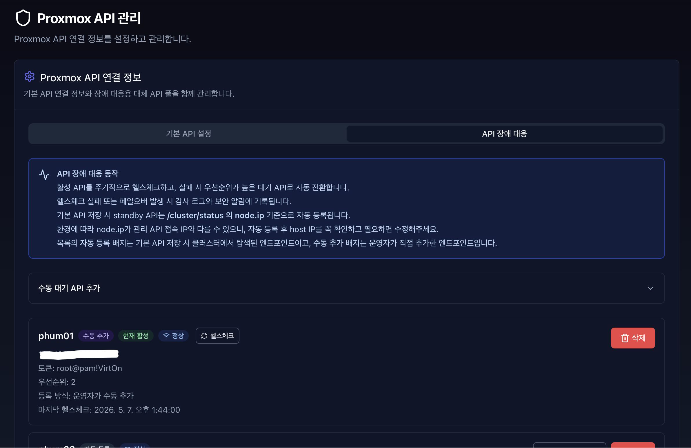

Proxmox API 관리#

VirtOn이 가상머신(VM)을 제어하고 모니터링하기 위해 Proxmox VE 서버와의 API 통신을 설정합니다.
해당 부분의 초기값은 초기 API 설정값으로 채워집니다.
4.13.1.1 입력 항목 설명#
항목 |
설명 |
예시 |
|---|---|---|
호스트 (Host) |
Proxmox VE 서버의 IP 또는 도메인 ( |
|
포트 (Port) |
Proxmox API 포트 (기본값) |
|
토큰 ID |
|
|
시크릿 키 |
해당 토큰의 시크릿 키 값 (암호화 저장) |
- |
항목 |
입력 기준 |
|---|---|
호스트 |
|
포트 |
Proxmox API 기본 포트는 |
토큰 ID |
|
시크릿 키 |
Proxmox에서 발급한 Token Secret을 입력합니다. 저장 후 평문으로 다시 표시되지 않습니다. |
4.13.1.2 설정 수정#

저장된 검증 연결 정보를 수정하고 즉시 시스템에 반영합니다.
“SUPER_ADMIN” 및 “ADMIN” 등 허락된 Role이 아니라면 수정은 불가능 합니다. 수정을 원한다면 관리자 계정에게 문의해주세요.
모든 값을 입력하지 않거나 알맞은 값을 입력하지 않으면 수정은 불가합니다.
해당 값을 수정하면 초기 등록과 마찬가지로 standby API가 /cluster/status 의 node.ip 기준으로 자동 등록됩니다.
💡 참고
설정 저장 후 VM 목록이 보이지 않는 경우, 네트워크 방화벽 설정 또는
Proxmox 사용자 권한(Permission)을 확인하세요.
4.13.1.3 API 장애 대응#

활성 API를 주기적으로 헬스체크하고, 실패 시 우선순위가 높은 대기 API로 자동 전환합니다.
헬스체크 실패 또는 페일오버 발생 시 감사 로그와 보안 알림에 기록됩니다.
현재 연결된 활성 엔드포인트는 수동 헬스체크도 가능합니다.
목록의 자동 등록 배지는 기본 API 저장 시 클러스터에서 탐색된 엔드포인트이고, 수동 추가 배지는 운영자가 직접 추가한 엔드포인트입니다.
현재 활성화된 엔드포인트 및 자동 등록이 아닌 엔드포인트만 수정이 가능합니다.
💡 참고 환경에 따라 node.ip가 관리 API 접속 IP와 다를 수 있으니, 자동 등록 후 host IP를 꼭 확인하고 필요하면 수동 대기 API를 추가하거나 수정해주세요. 기본 API 저장 시 standby API는 /cluster/status 의 node.ip 기준으로 자동 등록됩니다.